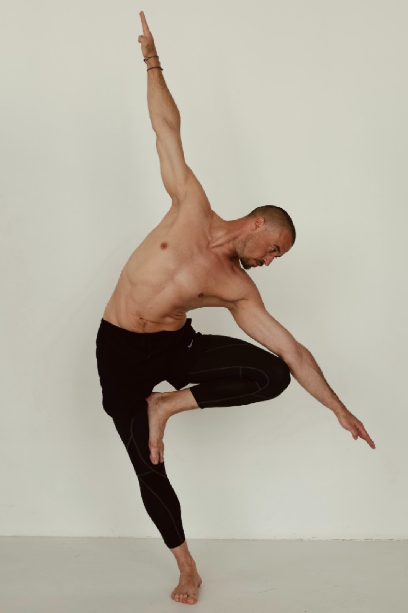
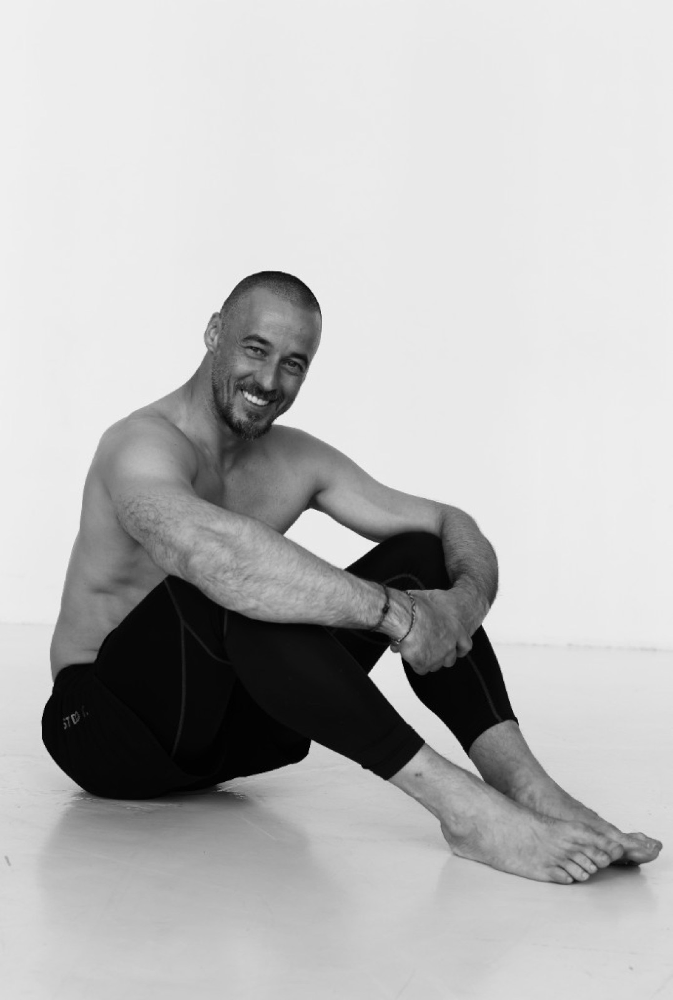

i. Базовый
Онлайн
- 30 онлайн-занятий
- Записи в доступе
- Чат потока
Ранняя бронь — после заявки
ЗаписатьсяАвторский курс Ильи Баринова
Йога для начинающих и практикующих. Курс о том, как практика работает через тело, дыхание и внимание — а не о повторении красивых форм.
Листать
— Слово автора
Илья — о принципах телесной грамотности, структуре модулей и о том, как практика работает через тело, дыхание и внимание.
Йога перестаёт быть упражнениями,— Точка опоры
когда её начинаешь понимать.
I / Аудитория
Курс собран и для тех, кто хочет войти в практику грамотно, и для тех, кто уже занимается, но хочет глубже понять, как работает йога.
— Если вы начинаете с нуля
— Если вы уже практикуете
II / Контекст
Многие начинают заниматься — и через несколько месяцев упираются в одно и то же: повторяют движения, но не понимают, что именно делают.
Поэтому в курсе фокус не только на упражнениях — а на понимании того, как практика работает.
III / Опора
Каждая опора — отдельный слой практики. Вместе они дают взрослую, безопасную и применимую систему.





— Запросы
Это типичные формулировки тех, кто оставляет заявку. Если узнаёте себя — курс собран в том числе для вас.
IV / Программа
Шесть модулей — от теории и безопасности к самостоятельной практике и ретриту.
— Ретрит
Три-пять дней живой практики на природе. Без сцены, без суеты — только тело, дыхание, тишина.
Поездка — по желанию. Маршрут полноценен и без неё.
V / Результат
Главный итог — не набор упражнений, а более ясное понимание практики и собственного тела.
— О курсе
«Точка опоры» — курс для тех, кто хочет начать заниматься грамотно или, уже практикуя, глубже понять, как работает йога: через тело, дыхание, внимание и регулярную практику.
На курсе разбирают базовые асаны, принципы безопасности, дыхательные техники и основы медитации. Задача — не освоить набор упражнений, а получить понимание практики и научиться использовать её осознанно.
Это не архив уроков и не разовый интенсив, а маршрут, в котором человек постепенно выстраивает опору в теле, состоянии и повседневной жизни.
— Формат
Живой процесс, а не архив видео. Участники проходят путь в одном ритме — с вопросами, разбором и ощущением прогресса.
На курсе важны регулярность, группа, поддержка и общий ритм — так проще не бросить и легче увидеть собственный прогресс.
— Отличие


— Голоса
Не «чудо за неделю». То, что остаётся в теле.
«Поняла опору в стопе — и боль перестала возвращаться.»
«Собрал свою последовательность. Перестал гнаться за глубиной формы.»
«Точнее вижу компенсации и опору — проще вести своих клиентов.»
VII / Участие
Точная стоимость и условия ранней брони — после заявки.
i. Базовый
Ранняя бронь — после заявки
Записатьсяii. Глубина
Ранняя бронь — после заявки
Записатьсяiii. Максимум
Условия ретрита — отдельно
Обсудить— Ранняя регистрация
Для тех, кто оставит заявку сейчас, фиксируется минимальная стоимость участия. Если курс вам интересен, лучше оставить заявку заранее — до официального старта продаж.
Оставить заявкуПосле заявки пришлём подробности о старте, формате и условиях участия.
— Вопросы
Да. Курс рассчитан в том числе на тех, кто только начинает и хочет войти в практику спокойно и грамотно.
Да. Курс подойдёт тем, кто уже занимается, но хочет глубже понять, как работает практика, и получить более ясную базу.
Нет. Курс помогает начать с текущего состояния тела и постепенно развивать подвижность без перегруза.
Курс строится с вниманием к безопасности. При выраженных ограничениях важно учитывать индивидуальные особенности и при необходимости ориентироваться на рекомендации врача.
Формат записей будет уточнён перед стартом. При предварительной регистрации мы отдельно сообщим условия доступа к материалам курса.
Да. Основная часть курса проходит онлайн. Условия участия в ретрите можно обсудить отдельно.
Курс рассчитан на регулярное участие в течение трёх месяцев. Точный ритм занятий будет сообщён перед стартом.
VIII / Заявка
Если вы давно хотели начать заниматься йогой — или уже практикуете, но хотите глубже понять, как она работает, — этот курс даст вам понятную базу. Без спешки. Без лишней эзотерики. Без механического повторения формы. Через тело, дыхание и внимание.
Мы свяжемся с вами и пришлём подробности курса. Срочно — Telegram.